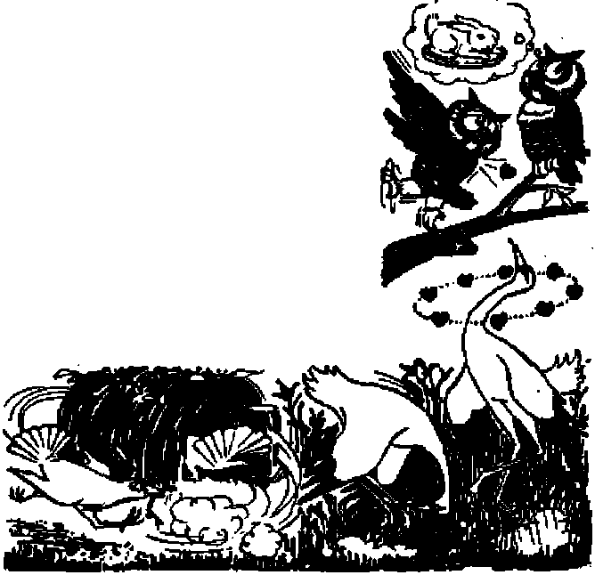
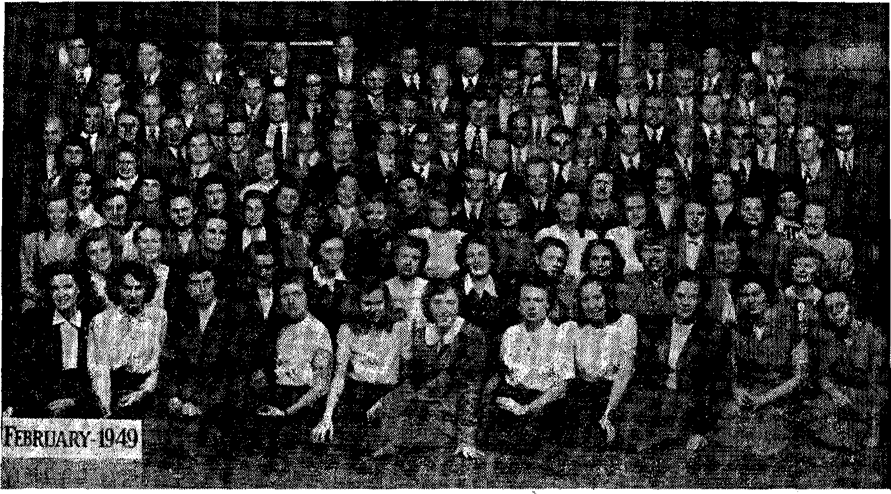

THE MISSION OF THIS JOURNAL
News sources that ere able to keep you awake to the vital issues of our times must be unfettered by censorship and selfish interests. “Awake 1” has no fetters. It recognizes facts, faces facts, is free to publish facts. It^is not bound by political ambitions or obligations; it is unhampered by advertisers whose toes must not be tread upon; it is unprejudiced by traditional creeds. This journal keeps itself free that it may speak freely to you. But it does not abuse its freedom. It maintains integrity to truth.
“Awake T* uses the regular news channels, but is not dependent on them. Its own correspondents are on ail continents, in scores of nations. From the four corners of the earth their uncensored, on-the'scenes reports come to you through these columns. This journal's viewpoint is not narrow, but is international. It is read in many nations, in many languages, by persons of all ages. Through its pages many fields of knowledge pass in review—government^ commerce, religion, history, geography, science, social conditions, natural wonders—why, its cover* age is as broad as the earth and as high as the heavens.
“Awake !’* pledges itself to righteous principles, to exposing hidden foes and subtle dangers, to championing freedom for all, to comforting mourners and strengthening those disheartened by the failures of a delinquent world, reflecting sure hope for the establishment of a right* eous New World.
Get acquainted with “Awake!'* Keep awake by reading “Awake!’*
Published Semimonthly By
WATCHTOWER BIBLE AND TRACT SpCjETY, Il 117 Adams Street Brooklyn 1, K
N, H, Knobs, President Gha.nt Suit&r,. Secretory
Five cents a copy One dollar a year
Ftfitlttancu should be md! to office in your ctmn-trr 1» compliance with refuletiont to suirantee Mte deliitty pt money, Hemlttanees are accepted at Brooklyn from countries where no office la Located, ty Internationa] money order only. Subscription tales in different countries are here stated In lota) currency.
NotlM of expiration (tri th renewal blank I U Bent at least two fwues before miiwoiptioii exptrsy
ChMK of addrtM when sent to our office may be expected effective within one mouth, Send your old as well as new address,
Offiqes Yearly Subscription Rate
Amerlu, U.S., 117 Adame St., Brooklyn 1, N.Y. fl Australia, 11 Beresford Bfl., Stratiiflclri, N.S.W. Bs Canada, 40 Irwin Ate,, Toronto Ontario JI Enn land, 34 Craven Terrace, London, W. 2 Sb $uth Alrlsa, 623 Bwton Hoose, Cajie Town So
Entered as eectmcbclaBa matter at Brooklyn. N, Y_, Act of Martti 3, 1B7&. Printed In U. S. A.
CONTENTS
Has Democracy’s Cradle Become Its Grave? 3
Cult Leader Leads Followers to Jail
Counter Revolution in Costa Rica
Rocket Power vs. Jet Propulsion
Higher Speeds Bring Greater Problems 15
“Apartments” and “Lovers’ Lanes”
Graceful Waltzers, Bounding Jitterbugs 23
“Thy Woid Is Truth”
Gilead Graduates Its Twelfth Class
Volume XXX Brooklyn, N. Y., March 22, 1M« Numbers
N “POSTWAR Greece”. This expression, often read in the international press, is not in keeping yrith the facts. This because the conditions formed in Greece are very little different from an actual state of war: martial law, war activities, air raids, daily communiques on the developments of hostilities, etc., have created a war atmosphere.
Through the Truman Doctrine, declared in March, 1947, the U.S.A, manifested its decision to assist Greek people in maintaining free democratic institutions, Said President Truman to a joint session of the Congress on March 12, 1947: “Every dollar spent will count toward making Greece self-supporting and will help to build an economy in which healthy democracy can flourish.” Has .every dollar spent helped democracy flourish! Have the millions spent helped! Let the democratic principle of free worship serve as a touchstone.
It is well known to all honest and goodwill people that Jehovah’s witnesses are not meddling in politics. They do not conspire against the government within the borders of the country in which they live. Their Christian belief is utterly contrary to any worldly politico-social pursuits. In whatever part of the earth they happen to live, they are law-abiding citizens and true Christians, following in the rules laid down by the Lord Christ Jesus: They ‘render unto Caesar the things that are Caesar’s, and to God the MAUCH as, 1949
things that are God's/ That is right.
In spite, however, of this unquestionable fact, the various religious circles, considering that the conditions now prevailing in Greece, owing to the communistic rebellion, offer them an opportunity for fully annihilating Jehovah’s witnesses^ applied themselves actively to their iniquitous work. They planned and put in practice a whole scheme of systematic slandering against Jehovah’s witnesses. They freely distributed special tracts and booklets throughout the country, wherein they rudely falsify the truth concerning the faith and work of Jehovah’s witnesses. Under the influence of such defamatory circulars, the government agents in the divers places proceeded at various times to such acts of violence as are really a black spot for modem civilization.
According to the Greek Constitution in force,"... any other known religion is tolerated, and worship ceremonies thereof are performed without impediment, under protection of the laws/’ (Art. No. 1 of Greek Constitution) An existing official opinion of the attorney' at the Supreme Court of Justice states that since the belief of Jehovah’s witnesses is a “ . . . known one, namely manifest without having any secret doctrines and service and not contravening the common morality and the public order, it ensues that J.W. are entitled to enjoy the tolerance recognized by the Constitution, which tolerance comprises also—in addition to the freedom of believing in any religion or sect whatever, or even in no religion;—performance of service without any hindrance, according to the doctrines of the sect they belong to.” (Opinion No. 1,1947)
In spite, however, of the religious tolerance, safeguarded by Constitution, and the fact that the Greek government declares through its competent ministers that “no persecution is carried on against Jehovah’s witnesses in Greece”, -and even that “teaching by any religious doctrine is absolutely free, and this, of course, equally concerns Jehovah's witnesses", what is actually taking place-in Greece against this small minority Js in tragic contrast with the above official declarations of the competent Greek authorities. We mention below a few cases of the many.
At Larissa (Thessaly), on September 15, 1948, Jehovah’s witnesses were arrested during their study on the holy Bible. They were taken to the local extraordinary court-martial and, while originally charged with unlawful gathering, they were finally sentenced on October 8, 1948, to heaviest penalties, not according to the decree regarding unlawful gatherings, but in virtue of N. Law No. 509, specifically enacted for the communists. Six received prison sentences of from 4 to 15 years.
At Volo (Thessaly), in July, 1947, 55 witnesses of Jehovah were mass-arrested while listening to a Biblical sermon. They were taken to the Larissa prisons and, after a provisional examination, they were all released. Fourteen only out of the 55 were to be committed for trial on the strength of a decree. The case was almost forgotten, when suddenly these 14 Witnesses at Volo received summons to appear in the extraordinary court-martial at Larissa on November 12, 1948, to be tried for unlawful gathering.
The trial was carried out, and 9 out of the 14 Witnesses were sentenced to prison terms ranging from 3 months to 5 years.
In Athens, on July 9, 1948, 35 witnesses of Jehovah were mass-arrested while listening to a sermon on the “Inspiration of the Holy Bible”. This meeting of tworship was broken in upon by the police, and all attendants were taken to Jail. After a few days’ detention therein, they were set free, but were summoned for trial in the extraordinary court-martial of Athens on September 25, 1948. There was full misconception of the faith and work of Jehovah’s witnesses. In spite of the speeches uttered by the solicitors, who had thoroughly upset the indictment, and in spite of the defenses of the brethren and sisters who had calmly and firmly explained the purpose and character of the meeting, the court sentenced 22 of the 33 defendants present in the trial to prison terms of from 2 months to years, and one was fined 2,000,000 drachmas.
What a tragical irony to the written statement made by the Greek authorities ! “If tolerance were to be the consequence of modern civilization for the other peoples, it is one of tradition for us Greeks, since religious persecutions have never been noticed in our land. .. . Teaching by any religious doctrine is absolutely free, and this, of course, concerns equally Jehovah’s witnesses.”
Recently the Western World wept and howled and publicly beat its breast over the horrifying treatment accorded to Roman Catholic Cardinal Mindszenty of Hungary because he plead guilty to political chicanery and received a sentence of life imprisonment But largely unnoticed went the murder of an innocent Christian by the Greek government, a government supported by United States dollars. A mere cautioning waggle of the finger of President Truman or Secretary of State Acheson would stop such atrocities in Greece, but they are too busy berating Communist-dominated Hungary for imprisoning a confessed criminal to reprimand U, S.-dominated Greece for murdering innocents. Typical
the publicity given the Greek Inquisition was the following brief Associated Press dispatch published in the New York Times of February 12,1949:
Athens, Feb. 11 (AP)—John Tsoukaris, a conscientious objector who refused military service because he belonged to the ‘‘Martyrs of Jehovah”, a religious sect, was executed today in Larissa. A military tribunal ordered his death. The “Martyrs of Jehovah’* are known in the United States as “Jehovah’s witnesses’*.
Though religion-crazed mobs goaded on by venomous Greek Orthodox priests have murdered others of Jehovah’s witnesses in that very undemocratic land, this is the first case where the Greek government has bathed its hands in the blood of these innocents. The Christian Century protested this execution in an article scoring the lack of religious liberty in Greece and said that such suppression “must be charged to the account of the Greek Orthodox Church” and that the World Council of Churches should disassociate itself from the actions of the Greek Church if it failed to “mend its ways”. Greek theologian Dr. Amileas Alivizatos, professor of canon law at the University of Athens, struck back and condemned proselytism as "a restriction of religious freedom and a sin”. Odd, but his reasoning is that mobbing and torturing, imprisoning and murdering such as Jehovah’s witnesses who pr&ach publicly is maintaining religious freedom and forestalling sin. He upheld the killing of Witness Tsoukaris, saying: "Conscientious objection is completely unknown and inconceivable among us.” (Religious News Service dispatch, February 17) Certainly an objecting Christian conscience is “completely unknown and inconceivable” to the Greek Orthodox Church.—Jeremiah 2: 34.
Protesting the execution of Tsoukaris were three clergymen of New York, a Catholic priest, a Jewish rabbi and a Protestant minister. The telegram, signed by R. W. Searle of the Protestant Council of the City of New York, S. E. Goldstein of the Free Synagogue of New York, and M. J. Deacy, a priest on the staff of St. Patrick’s Cathedral, was sent to the Greek Embassy in Washington, and said the execution by the Greek government “violates not only the principle of individual conscience but also the fundamental laws of human decency and democratic government. The entire Western World was shocked at the treatment given Cardinal Mindszenty in Hungary for his conscientious refusal to co-operate with a course of action contrary to his religious convictions. This similar action by the government of Greece is equally abhorrent to us”. (Religious News Service, February 15)
Awohe, America!
Two additional protests have appeared that deserve publicity. One is a letter written to the editor of the Evening Star, of Washington, D.C., and published therein on February 16. It follows;
I am indignant at the sentencing of Cardinal Mindszenty to life imprisonment, and I am concerned with the impairment of religious liberty in Hungary, a Communist-satellite country. But last week I noted with equal concern a news item announcing the execution of a conscientious objector in Greece, an American-satellite country.
Several days have now gone by, during which I have scanned our press with attention. Nowhere have I heard of a protest meeting being called. Greek consulates have nowhere been picketed. Secretary Acheson, in press interviews, has not, by the dicker of an eyelash, expressed abhorrence of religious persecution in Greece. The princes of the Catholic Church in America have not uttered a word of denunciation. Proteatent leaders who are so exercised over the Mindszenty case and over the arrest of 15 Bulgarian detgymen charged with treason have not, even by a whisper, indicated moral revulsion against the execution of John Tsoukaris.
Yet, of the two cases, the one in Greece is surely the more flagrant. The victim in Hungary admitted partial guilt; the victim in Greece was guilty of no political opposition to the Greek government whatsoever. The victim in Hungary was intimate with those who desired to overthrow the government; the victim in Greece had no political connections of any sort. The victim in Hungary has been sentenced to imprisonment, but with the right to a review of his case; the victim in Greece is dead.
Yet in America millions of voices have denounced the Hungarian government, which we dislike on- political grounds, while dead silence obtains when a still more heinous crime is committed by the Greek government, which we have subsidized with an endless flow of American dollars.
American protests against religious persecution might have some effect upon the Greek government, which is our ward. But we make no such protests. It is unlikely that the Hungarian or any other foreign government will take seriously our protests when they appear to be motivated by political interest rather than moral outrage.
Richard Langford.
The other forceful protest appeared in the Cleveland Plain Dealer} February 14, in the form of an editorial. Who can fail to note its dear logic, as it says:
No side in the cold war, it appears, commands a monopoly on the persecution of those persons whose religious convictions do not conform with the ideas of the ruling-state power.
The trial of Josef Cardinal Mindszenty in Hungary and the coming arraignment of 15 Protestant leaders in Bulgaria are part of the traditional and concerted Communist drive against religion.
The western world is rightly incensed. The injustice is patent. The trials are a violation of the peace treaties with these former satellite states of Germany, Yet nothing of a legal character can be done to correct the injustice in the Hungarian case or prevent a recurrence of injustice in the Bulgarian case.
Charges and countercharges between the United States and Hungary have reached the point where Budapest has asked for the recall of the American minister, Selden Chapin. This was retaliation for the ouster from the United States bf John G. Florian, first secretary of the Hungarian legation, as persona non grata. This in turn was an answer to the dismissal of two lesser officials of the American legation in Budapest at the request of the Communist regime.
This game can lead nowhere. Neither will any projected protest before the United Nations. But there is one place where the west, specifically the United States, can take effective action to put an end to these persecutions. That is, it can do it if the issue involved is really religious freedom and not alone the fate of any individual person. This is in Greece.
If Russia is to be held responsible for the anti-religious upsurge in the eastern zone— and we believe it is—then the United States must be held partly responsible for the religious persecution that lias taken a most sordid twist in its zone, in the puppet state of Greece.
While the world had its eyes on Budapest and later on Sofia, the Greeks sent before a firing squad one John Tsoukaris, a member of the sect of Martyrs of Jehovah, the name of Jehovah’s Witnesses in Greece, and a conscientious objector.
It may be charged that Tsoukaris was executed because he refused to do militaiy service and not for his religious beliefs. Well, the Hungarian primate was charged with black market operations. And the Bulgarians are accused of dealing with the enemy—to wit Englishmen and Americans.
Since- when has the code of any western or civilized nation included the death sentence foi* refusal to bear arms on the basis of religious scruples t- Not even in the heat of war did any western state so rule. The Greeks are part of the western system. More, Greece is a province of American influence. However much Washington may disclaim responsibility by appeal to the old myth of nonintervention, the truth is that we interfere in political, military and economic matters at every turn every day and therefore the execution of a man in Greece because of his religious beliefs rests squarely on Washington’s doorstep.
The place to stop religious persecution is in those areas where we have the power to do ao. Only with clean hands can we then condemn those Soviet puppet states which carry such fanaticism to the extreme.
Yes, America is saving Greece from Communism; but to what is she saving the Greek people! America should wake up to what she is supporting, that the totalitarianism in Greece under the label of democracy only drives oppressed ones into the Communistic camp. Has democracy’s cradle become its grave? The odious reports that come out of Greece certainly have the smell of death!
Quit Leader Leads Followers to Jail
Some time ago, in Port Harcourt, Nigeria, G. M. Urhobo sent members of his “God’s Kingdom Society” along the streets with trumpets, announcing that whenever Jehovah’s witnesses came preaching from door to door they should be flogged. Shortly thereafter a Witness was asked inside a house,
the door locked by two members of “God’s Kingdom Society”, and a paper placed before the gospel-preacher. He was to sign a statement that he would cease activity as one of Jehovah’s witnesses and become a GKS cultist. Impossible request! For refusing the Witness was flogged with a cane and beaten with a shoe heel. When police rescued the bleeding minister he was rushed to a doctor. The Coggers were scooted to jail. Urhobo called upon the public to attend the trial to witness God’s deliverance of his cane-wielding cultists; They were delivered, but to jail. On January 24 one w^s sentenced to six months’ imprisonment, and the other t? three months’ or a fine of £5.
O'Toole, What a Tool!
It is a long jump from the days of Jefferson and Lincoln, when Congress-men cherished their freedom from papal rule and slavery, to the year & 1948 when Representative Donald L. O’Toole, Democrat from New York,
insists that the “Protestant” United States government guarantee the safety of the pope. Frightened by a red bogeyman O’Toole waits that a “terrible fear has been placed in the hearts of more than 25,000,000 Roman Catholics”, But this fear has not been placed there fay the facts, but by the propaganda of their priests. Blind to this fact O’Toole hysterically screams that if any barm is done “to this holy man, it would be a world tragedy”. Evidently O’Toole does not consider it a “world tragedy” when the pope’s henchmen blessed Mussolini’s rape of helpless Ethiopia and Albania, when the pope’s forces under bloody Franco slaughtered 2,000,000 men, women and children, or when Catholic Hitler, armed with a Vatican concordat of co-operation and friendship, touched off World War II. Oratorical O’Toole, overlooking this record of Vatican collaboration, goes on to declare: “Our State Department should, in forthright manner, take the lead in sternly warning the forces of evil that our Government and the other Governments of the Western bloc intend to, and will, guarantee the security of the Papal State and our Holy Father.” What a tool is O’Toole for his, pot “our”, “Holy Father”!
Shopping Therapy
“Mrs* Brown wore an angry frown as she stormed into her neighborhood food store* It had been such a frustrating day. But she hadn’t stomped far along the aisle before she slowed to the rhythm of soft music wafting gently throughout the store. The lady was undergoing some of tho latest ‘shopping therapy* which chain food stores are practicing du their customers to ease the parting of the dollars?* So reports an Associated Press dispatch of last year. It adds that Mrs. Brown left the store smiling, arms piled high with purchases.
*Bread from Trees
While on the theme of shopping, how would you like to pick a loaf of bread off a tree? It cannot quite be done, but many natives of the South Pacific come near to it. They pick breadfruit from breadfruit trees, which grow fifty-feet high and have large glossy leaves eighteen inches long. There are two or three crops a year, lasting for nine months, which means only three months annually are without fresh breadfruit. Inside the fruit is a pulp of high food value, which the natives cook for forty minutes on hot stones- Sometimes a village digs a hole several feet deep and thirty feet wide, covers the bottom with hot stones, then a layer of leaves, and on top of this go hundreds of breadfruit. Besides yielding bread, the tree furnishes wood for building houses, furniture and boats. The inner bark can be beaten and made into thread, the thread woven into doth, and the doth fashioned into clothing,
{JrysbiJs for Cnspness
A handy device called Crisp-It is a small holder of chemically treated crystals that absorb moisture with a greed that is gratifying. Put it in the breadbox or cookie jar and it will drink up the humidity from air or bread or cake, and on the most humid August “dog days” soggy foods return to crispness. It will either prevent sogginess or reclaim crackers and
cookies already wilted. Crisp-It may be used indefinitely, for when the crystals have ‘absorbed their fill of moisture and turn pink they can be wanned in the oven. They come out blue, and thirsty, and ready to go to work ojice more,
TShis Topsy-turvy World
The Blanchester Guardian, November 28, 1948, reports: “A London girl is reported to be training in hopes of becoming the first woman professional boxer, but it seems highly improbable that public opinion would now tolerate such exhibitions by ‘female pugilists’ as were sometimes staged in the eighteenth century, A newspaper^ report of one such contest in 1788 recorded: ‘Two women fought for a new shift, valued at half a crown, in the Spa Fields, near Islington. The battle was won by a woman called Brusing Pe£, who beat her an ironist in a terrible manner? In the same year, in the same place, it was later recorded: ‘An extraordinary battle was fought between two women and two tailors for a guinea a head, which was won by the ladies? who beat the tailors in a severe manner? Of yet another such contest the record is preserved in a London newspaper advertisement: ‘I, Elizabeth Wilkinson, of Clerkenwell, do invite Hannah Hyfield to meet me upon the stage and box me for three guineas, each woman holding half a crown in her hand, the first to drop the money to lose? Which seems rather a good way of discouraging either of the combatants from ceasing to box and starting to scratch?’
In Hollywood it is different. There they have beauty parlors for men, Permanents, mud packs, facials, manicures, hair-shaping, hair-dyeing, eyebrow-plucking, everything goes to make the male match his mate in artificial beauty. The men customers, tired businessmen as well as movie idols, are judiciously swished in and out of the places to preserve as much of their masculine reputation as possible* Fabulous Hollywood, the exception to all rules, including the one about ‘out West where men are men\
POOR little Costa Rica, scene of tw’o revolutions in one year, all because of the political ambitions of one man and his political machine! For this reason Dr, Rafael Angel Calderon Guardia has been named Costa Rica’s public enemy number one. Having fled to Nicaragua when the defeat of the Picado government was certain, Dr. Calderon and his henchmen (Nicaraguan officials were accused of aiding) launched an attack on Costa Rica at the border town of La Cruz in Guanacaste province. This attack came upon the heels of the national election in Costa Rica when voters went to the polls to elect members for the Constitutional Congress that will ratify and put into operation the new constitution being drawn up for Costa Rica.
At present and since the successful revolt under Jose Figueres last April this country has been without a congress or constitution, but is being governed by a board or junta with Figueres as its president. The election gave PresidentElect Otilio Ulate’s party an overwhelming majority, thus proving again that he is the choice of the people. The election was calm and peaceful and no events of any consequence were registered. In the voting Ulate’s party obtained more than 63,000 votes, which will give the National Union party 34 seats in the constituent assembly. The Constitutional party headed by former Calderon supporters and made up of Calderon Communists was second in the running, with more than 10,000 votes. This gives them 6 seats. The Social Democrat party, which in the Feb-
made up part of the “Opposition” that elected Ulate, went its qwu ticket and gained enough votes to seat 4. To fill out the 45 members, the National Confraternity party headed* by Dr. Vargas Vargas polled sufficient votes to seat one member.
But the rejoicing over the results of the election of December 8 was shortlived. On December 11 La Nation carried the headline, “Is an Invasion of Our Northern Frontier Imminent?” Before noon the answer came. La Cruz had been taken by the invaders, Members of .the garrison there were able to escape when they saw that they could not cope with the situation, taking with them the radio equipment. Thus word of the invasion was gotten in to the capital, this action came just eleven days after Jose Fi-gueres had dissolved the army and at which time the Bella Vista Fort was turned over to the department of education for a museum.
With the army dissblved a call was made for volunteers to ward off the invasion, The old concentration camp of the Calderon administration was converted into a recruiting station as men from all walks of life laid aside their secular tasks and offered their services to the government. School buildings were transformed into billets as battalions were fbrmed and trained.
El Diario de Costa Rica, in its edition of December 13, stated that there were only eighty Costa Ricans in the invasion forces and that the balance were mercenary troops from other countries. Since the invasion was from the north, neighboring Nicaragua became involved. In an Associated Press dispatch, dated New York, December 11, General Anastasio Somoza, Nicaraguan minister of war, stated in an interview over the telephone that he had closed his side of the border to prevent Costa Ricans living in Nicaragua from crossing over into their home territory.
However, an official communique from the Costa Rican chief of staff, dated December 14, reported that in an encounter with the invaders at Potrerillos, ijear La Cruz, 38 were taken prisoners, including Pedro Jose Ordonez, Nicaraguan commanding officer of the group. He stated that he and his men were armed at Penas Blancas in Nicaragua by-Luis Somoza, son of the Nicaraguan ruler. Some of the men that were captured bore arms with the insignia of Nicaragua.
El Diario, in its issue of December JL6, carries a letter and three memorandums from the Nicaraguan Legation in San Jose. In the memorandums the Nicaraguan minister of foreign relations reaffirms his country's policy of non-intervention either directly or indirectly in the affairs of another nation. He also denies the charges made by Ordonez stating that at the time Luis Somoza was in another part of Nicaragua with some distinguished North American guests. The same issue of El Diario reprints an interview between General Somoza and a reporter of La Estrella de Nicaragua in which the general admits knowledge of the invasion plans.
Regardless of the foregoing, Costa Rica had been invaded from the north and Costa Rican ambassador Mario A. Esquivel in Washington lost no time in informing the Organization of American States concerning the state of affairs at home. After an exchange of cablegrams between the Council’s president, Enrique
V, Coraminas, and Costa Rican officials, during which time the matter was being debated in Washington, it was agreed upon by a vote of 12 to 0 to intervene in the conflict. (Only 15 nations had ratified the pact and Costa Rica and Nicaragua were not allowed a vote; the Dominican Republic abstained.)
Thus the Rio Defense Pact was being invoked and a four-man investigating commission was being sent to both Costa Rica and Nicaragua to make an investigation of Costa Rica's charges and Nicaragua's refutation of them. The commission was made up of the following men: Jose Maria Bello, Brazil; Paul C. Daniels, United States; Luis Quintanilla, Mexico, and Silvio-Villegas, Colombia.
This four-man commission arrived in San Jose at 4 p.m. Friday, December 17, and were met by President Figueres along with other Junta members, and the San Jose diplomatic corps, Paseo Colon and Avenida Central from the airport La ^Sabana to the Hotel Costa Rica was carpeted with flowers placed there by Costa Ricans that lined both sides of the street for more than the kilometer between these two points. President Figueres was unguarded and there was no military escort on hand to convoy these visitors from the airport to their hotel. Thus the commission could form a firsthand opinion ,that, quite contrary to reports from Calderon’s propaganda machine, San Jose as well as the rest of the country was .calm, and that the people of Costa Rica had not rebelled against the Junta. The cheering crowds proved that the government has the hacking of its people.
The commission visited Liberia, capital of Guanacaste province and center of activities in combating the invasion. This visit came after the commission had been in session on Saturday, December 18. The commission convened with President Higueras in the Ministry of Foreign Relations and examined the arms and other equipment that had been taken from the prisoner. Some of the prisoners themselves were interviewed as well as some of the members of the Caribbean Legion. No newspapermen were allowed at the session, according to an Associated Press dispatch of the same date. However, in an intetview previous with some of the 39 prisoners, they stated that Calderon Guardia was at the head of the revolutionary movement and that Calderon had told them the minister of war of Nicaragua, Anastasio Somoza, had promised his aid to Calderon's movement.
On Monday, December 20, the Investigating Commission left Costa Rica for Nicaragua to confer with the government heads of the accused nation in this mixup. President Victor Roman y Reyes declared that they would prove that Nicaragua had not intervened in the affairs of another nation and that “nonintervention” was their policy. Colonel T. Alfonso Sapia-Bosch, of the United States, as military adviser for the Commission, in company with other advisory members of the Commission visited Los Mo j ones to investigate Nicaragua’s accusation that the customs outpost there had been machine-gunned from the air.
On the Fighting Front
While the investigations were in progress the Costa Ricans were strengthening their positions in Guanacaste province along the border, but on Monday, December 20, the invaders attacked at another point, this time in Heredia province at San Miguel de Sarapiqui. The government troops there asked for reinforcements and evidently these were able to repel the rebels* This news of a second invasion point was soon overshadowed by news reaching San Jose that a group of six Red Cross workers had been assassinated in Murcielago on the Pacific coast to the southwest of La Crtiz, the invasion point. The official version is that these six men, including a MARCH 1&49
Roman Catholic priest and a drug salesman for Parke-Davis and Company, were signaled to a house where they were told that they could establish a hospital. Once inside the house they were machine-gunned and their bodies mutilated*
This inhumane treatment of thig Red Cross group seemed to spur on the Costa Rican defenders. Troops moved up the coast to take Puerto Soley, port to La Cruz, as another division came in from the other side to take the airfield, El Amo, and later moved into La Cruz, routing the invaders into the hills. When the order from the Organization of American States came to cease fire the Costa Ricans had regained all their territory and every thing seemed to be well in hand.
The Costa Rican government had taken with good faith the order to cease fire and had brought in a good number of its forces to be with their families over the 25th. From the throngs that filled the streets it could hardly be imagined that the country was in a revolution, and in spite of the fact that the Investigating Commission’s report had netted a “cease fire" order to both sides, the invaders, about 100 in number, attacked the small garrison left at Puerto Soley. The attack came in the late afternoon, and first reports stated that the 57 men left to keep order had been attacked while they were eating and that only a few had been on guard. However, later reports from the defenders themselves state that they were on the alert all the time and that they waged a 60-minute battle during which their machine gun jammed and their ammunition gave out. Some tried to escape, three were killed in action, and 39 were taken prisoners. An interesting note was brought to light after these prisoners were returned from Managua. The father of one of these 39 related the incident to the writer of this account, which goes as follows:
As the invaders were the victors in this encounter, our boys were rounded up and taken to the beach to be shot. One of the invaders recognized his brother among the defenders, and, through this family tie the lives of the other 38 were saved. The boys then were inarched to the Nicaraguan border, where their captors interchanged signals with the garrison on the Nicaraguan side and they were ushered into Nicaraguan territory and put into the hands of the National Guard, from where they were taken to Managua. They were treated well while in Nicaragua, and especially the civilians were most kind and showed them all kinds of favors, brought them food and cigarettes. The boys were blindfolded while they were interviewed so that they would not recognize their interrogator. Most of the questions were about the Caribbean Legion in San Jose.
This brings us to the Caribbean Legion. This is a group of military and political exiles from different Latin-American countries in the Caribbean area. Its head, General Ramirez, Dominican, who had a share in Costa Rica's revolution of last March and April on Figueres’ side, announced late in November that this group was to be dissolved early in December and that its members in Costa Rica would return to their own countries and thus avoid difficulties to Central American governments. It was against this Legion's presence in Costa Rica that the Nicaraguan minister of war, General Somoza, made complaint to the Investigating Commission. And in its findings the Council announced that Costa Rica should dissolve any military organization within its borders that was threatening the peace of Nicaragua. On January 6 Prensa Libre said the Legion was being dispersed to other countries, to conform to the Council's instruction. The Council has ordered another commission of five members to come to Costa Rica and Nicaragua and stay until the affair has been satisfactorily settled.
Thus again Dr. Calderon's plans to rule Costa Rica by force have come to nought* El Diorio, of December 29, quotes from La Estrella de Nicaragua saying that the dailies of Managua are ridiculing Dr. Calderon's ‘Revolution". It states that it was nothing more than an adventure in looting and plundering on tire part of some Costa Rican rogues, joined by a few Nicaraguans of the same stripe. The account went ahead to say that they hoped that these adventurers would not be seen again in the streets of Rivas, Nicaragua (seemingly the mili-ta:y headquarters for the group); but some have reappeared, selling their booty. According to this paper the revolution was against a defenseless people at La Cruz, the personnel of the customs outpost and telegraph operators, at times making surprise attacks on government detachments and quick retreat into the hills. Now they are scattered, and if they attempt to cross .back info Nicaragua they will be faced by the National Guard.
In a radio speech on December 31, President Figueres exhorted the Costa Ricans to get back to work and pick up the rebuilding program where it had been interrupted. The country was progressing, but this has been a setback and it will take just that much more time to get going again. One thing that has come out of this, conflict is the workability of the Rio Defense Pact. The Council went to work immediately and with its Investigating Commission was able to put the finger on the cause and is working to remedy it to the satisfaction of ail concerned.
How long all will remain in peace and quiet no one can foretell. As long as the present wicked world is in existence no lasting peace can be expected. It is only when the Prince of Peace has put down all breakers of truce and selfish, ambitious men that the' world can expect a lasting peace with plenty and complete freedom for the survivors.—Awake! correspondent in Costa Rica.
ABOUT two thousand years ago Hero of Alexandria, by means of his aeolipile, first demonstrated the propelling force of expanding gases. Since then jet propulsion has skyrocketed to heights that the Greek mathematician nqver dreamed possible. The jet power of the rocket has carried huge airships into the stratosphere, Jias hurled men through space et the fantastic speed of 1,000 miles an hour, and has even carried the zealous vision of aviation's soothsayers as far aloft as Mars and the moon. They call this the supersonic age, the age when sound is overtaken and passed by. The age, if we are to believe their stories, in which the airplanes that now fly at 500 miles an hour will shortly be put in the museum with the oxcarts and buggies.
However, few people are visionaries. The majority are realistic, practical and live in the present, with at least one foot on the ground. They are not so interested in flying off to the moon as they are in spanning an ocean or a continent While very much interested in highspeed aviation, they demand a high percentage of safety with increased speed. Consequently, the majority of people are more interested in what has actually been accomplished in supersonic flying than in the theoretical possibilities of interplanetary travel.
The rocket is not an invention of this twentieth century, for since as long ago as the thirteenth century, when blackgunpowder rockets were made, fireworks have been brightened up in many lands with colored rockets. Since the 1400’s the military establishments have used rock-MARC& 22,
ets in warfare, and in 1814 it was such a weapon that set the Capitol at Washington afire. A century ago an Englishman named Golightly suggested that the principle of the rocket could be used to fly an airship, but it was not until 1928 that rockets were first tried out in launching gliders. The idea was considered impractical, and in 1930*the thought was expressed that the design and construction of rockets had about reached their limits
Then came World War II and the Germans tried to sink the British Isles with rocket shells and buzz-bombs. The first operational aircraft powered solely with rockets was the German Me-163B, having a sustained flying time of about five minutes and a speed of GOO miles an hour. The Germans also built jet helicopters. England developed a Whittle jet engine, and seventeen months later, in 1942, the American jet-fighter, the P-59 A, was flown at about 400m.p.h.
Since the war America's rocket science, research and experiments have been speeded up in an all-out race for air supremacy. V-2 rockets 46 feet long, 5.4 Jeet in diameter, and weighing 12 tons at the take-off, 8 Ions of which ia alcohol and liquid oxygen, have risen over 100 miles to hit a speed of more than 3,000 miles per hour. Based on experiments at the Ohio State University in which liquid hydrogen and oxygen are used as rocket fuels, Prof. H. L. Johnston estimates that theoretically a rocket could be sent to the moon at a speed of 30,000 miles per hour. Explaining the “catch", Johnston said: f'All we need ia a ship to put the liquid hydrogen in.”
Of more real, practical and living interest are the results obtained by the XS-1 rocket planes, in which human flesh has actually flown. In one of these needle-ndsed ships, nearly 44 years after Orville Wright first flew his “bailing-wire” contraption, Charles E. Yeager claims he has passed up the speed of sound and flown more than 1,000 miles per hour. On December 17, 1948, Lawrence D. Bell, producer of the XS-1, speculated that it is now possible to build an airplane “with speed two or three times” that of the present model, speeds of at least 2,000 or 3,000 miles per hour. The midget XS-1 is only 31 feet long and 28 feet in wingspread. It carries 600 gallons of rocket fuel, which if used sparingly lasts 7 minutes, but with the throttle wide open it burns itself up in 2J minutes. Carried in the bomb rack of a B-29 to an altitude of 25,000 feet and then launched, the XS-1 is able to climb to a height of 13 miles.
From behind the Iron Curtain of Russia comes the following sensational rocket news, as reported by United Press from Berlin, December 20, 1948:
The world's first piloted supersonic rocket projectile is the spearhead of a new, gigantic Soviet air force, a Russian science magazine claimed today. The aircraft-rocket was described by the magazine Vokrug Sveta (Around the World) as “a flying arrowhead with a speed far in excess of sound”, which is about 700 miles an hour at sea level. The projectile was said to have been put through its first public paces on Red Air Force Day, June 25, when, the Soviet author said", “a huge crowd stood awe-struck by the sight of this extraordinary . propellerless machine hurtling past them at colossal speed."
The essential difference between rocket and jet engines is that rockets carry liquid oxygen to burn the fuel, whereas jets obtain oxygen from the air while in flight In the rarefied atmosphere where there is little oxygen the rocket has it all over the jet in performance, but at lower levels the jet planes need to carry only one-sixth as much fuel as rocketcraft
Hitler’s infernal buzz-bombs sent over England were powered with what is known as pulse-jet engines. Launched by rockets, the pulse-jet begins operating when sufficient air pressure is built up ahead of the engine to open the intake valves. Air is then sucked iirT mixed with gasoline, and fired. The explosion closes the intake valves, drives the machine forward, and thus allows the exhaust gases to escape through the back end. This in turn causes a partial vacuum which opens the intake valves for another charge of air. Thus firing about 40 times per second it acquired its name “pulse”
Further development in jet propulsion gave birth to the turbo-jet, now used extensively on military planes. The open end of this engine continually scoops in the air and runs it through a rotary compressor where its pressure is built up nearly five times normal before it enters the combustion chamber. The hot exhaust gases, as they pass out, are used to turn the turbine blades of the compressor. Then, by nozzling down the exhaust opening the escaping gases jet out against the outside atmosphere at twice the velocity of the moving plane.
Variations of the jet principle are used in combination with standard reciprocal engines to recover exhaust energy that would otherwise be lost. One of these is called the “piston-jet”. Another, the Wasp-Major VDT, utilizes the exhaust energy of 28-cylinder Pratt-Whitney engines.
There is another type of jet engine known as the ram-jet, called by the British “athodyd”, and also known as the “flying stovepipe”. It gets its latter name from the fact that it is nothing more than a tube, open at both ends, and made of a special stainless steel alloy. Like the turbo-jet it is a continuous duct engine, but unlike the turbo-jet it has no compressor, and hence no energy is lost turning a turbine. In fact, the ram-jet, having no moving parts, is about the simplest-type engine there is, yet one of the most powerful.
Air rushes into the forward section called the diffuser, say, at the speed of 1,000 miles an hour. Once inside, its velocity is slowed down to almost a complete stop, and thus it is automatically compressed to an extremely high pressure before entering the middle section, the combustion chamber, where it is mixed with a fuel like kerosene. The recoil from the explosion drives the engine forward, and because of the solid head of compressed air in the forward section the exhaust gases can escape out only through the back section, which is narrowed down to increase the velocity of the exhaust. Theoretically, it would seem that there is no limit to the speed of the ram-jet, for the harder it rams ahead, the greater the compression, the greater the explosion, and the greater the speed. Friction and drag, however, place a limit even on the ram-jet.
One might suppose that the ram-jet is the most ideal engine yet developed for the airplane. It is very light in weight. The first models weighing but 70 pounds attained a speed of 1,400 miles an hour. The largest ram-jet, some 10 feet long and" 2J feet in diameter, delivers 25 times as much power as the best reciprocal engine. On a weighthorsepower basis it weighs but a halfounce to the horsepower, to compare with one pound of the horsepower delivered by the conventional internal combustion engine. In this respect the ram-jet compares favorably with the liquid fuel rocket. The big drawback with the ramjet is the fact that it will operate only at extremely high speeds, and unlike the rocket it will not function at high*alti-tudes, where friction and drag are the lowest. So, there seems to be a useful place in aviation for each type of engine.
The propeller-driven reciprocal engine is good for speeds between 0 and 550; the turbo-jet, from 550 to 1,200; and above 1,200 the ram-jet. For high altitude there is as yet no engine that will take the place of the rocket.
What about atomic energy as a source of power! Why not fly airplanes with a uranium "pile” instead of wasting the ■ stuff in A-bombs! It is true,-that one weight-unit of atomic power is equal to 2,000,000 weight-units of gasoline. And a nuclear engineer says that the problem of flying a plane with atomic power has been worked out, at least 90 percent in theory. But there is a lot more involved than tlieory. The technical problems that must first be solved are very great. For example, the shielding necessary to protect the crew from radiation would be so great it could be installed only in the very largest planes, weighing at least 150 tons.
Building more powerful engines that will increase the speed of planes only brings the aeronautical engineer face to face with greater problems. If a highspeed, long-distance airship driven with an atomic engine took to the air it would run head on into the sizzling problem of air friction. When an F-80 fighter chases after an enemy at 600 miles an hour the friction of the air makes the plane 50 degrees hdtter than the air. The XS-1 flew at nearly twice this speed, but only for a few minutes. If transoceanic flying is attempted at such elevated speed temperature control will become a major problem. Friction at high altitude is much less, it is true, but if a plane were streaking along at 1,500 miles an hour at an altitude of 50,000 feet, up where the temperature of the air is 70 degrees below' zero Fahrenheit, the temperature of the plane would be 270 degrees above zero, a difference of 340 degrees I
Friction, technically called drag, raises another problem besides that of heat control—that of fuel consumption. If the speed of a plane is doubled, instead of twice the consumption, it takes four times as much fuel to overcome the drag. Because of the weight and bulkiness of liquid fuels, like the liquid oxygen and alcohol used in the XS-1, some engineers have suggested using powdered aluminum, magnesium or a mixture called thermite, used jn welding, because such powders are twenty times as efficient. However, before such powdered fuels can be used it is necessary to find materials out of which to build engines that will withstand the terrible temperatures produced. The best alloy steels would How like molten lava.
How to navigate a supersonic ship is still another problem that will have to be solved before long-distance supersonic flights become feasible. Present radio directional finders, like the Loran system, lake a little time to compute and are therefore impractical. As an Air Force general says: "When you find out where you are, you're somewhere else.”
Up until the time Yeager pushed his XS-1 up to the 1,000-mile-an-hoUr mark there were all kinds of frightful stories about the perils imposed'by the sound barrier. Why, they said, it would shatter planes and knock pilots unconscious. Though properly designed planes have proved these fears to be greatly exaggerated, yet there is a definite sonic "barrier” that must be overcome in supersonic flying. At sea level the speed of sound is 761 miles per hour, but 35,000 feet up it is around 600. Morton M. Hunt, writing in Science Illustrated, briefly relates what actually happens when a plane approaches the speed of sound:
It [the air] no longer has time to separate and flow smoothly around the wing; instead, it packs up like snow in front of a plow, and more or less solidifies and has to be forcibly shoved aside. Then, as the shattered air passes by the wings and fuselage, it reaches a place where it suddenly switches back to normal pressure and subsonic speeds; all within 12 ten-thousandths of an inch.
That sudden switch-over produces a ^shock-wave.” Behind the shock-wave everything goes wrong. The air boils around in violent eddies and gusts ; it no longer clings smoothly to the wing surface, but swirls off it in violent turbulence. Pounding, fluctuating blows hammer the plane continuously. The controls —ailerons, rudder, and elevator, which depend for their effect on pressure against smooth-flowing air—become useless. Drag multiplies until it takes terrific power to push the plane faster, into the stiller air beyond. This, then, is the picture of the sonic barrier.
Wings are one of the greatest drawbacks, and a major problem in the design of high-speed planes. If the wings are given an extreme sweepback design the plane is unstable except at high speed. Reducing the wings to the minimum size, as in the case of the XS-1, gives the plane so little lift it has to be carried aloft by a mother ship, and in landing it has to hit the runway at the scorching speed of 160 miles per hour.
These facts, then, show that supersonic flying, although possible for a few moments at a time, is still very much in its infancy. Experiments will continue, new alloys will be cast, ceramin-coated metals will he perfected, improvements in jet engines will be designed, and more planes of higher speeds wijl be built. However, commercial aviation that transports the majority of the air-minded will continue to fly in the subsonic range for years to come.
*3? Recently s New York airport did dual duty. A flock of twenty-six wild geese made a forced landing there during a rainstorm. After circling the field three times, they swooped in for a perfect landing. Twenty minutes later they took off, headed south.
A good voice. If it id round and strong, we are more likely to have faith in the. speaker. If the voice is pure, melodious and warm, it is disarming; it is subtly and gently persuasive. Good voices carry conviction; bad voices create doubt.” So contend Sarett and Foster, in their book Basic Principles of Speech*
A g\>ud ts fur more than a mechanical reproducer of words. It interprets the meaning of the words to a large extent. It portrays inward emotions at the time the words are spoken: the love, mirth, wrath, joy or tranquillity of the speaker's mind and heart. A good voice is easy to listen to, and a voice that is easy to listen to is easy to believe. A good voice holds the audience's attention; a bad voice distracts their attention. A voice that is weak or rough or nasal may draw such attention to itself that the audience fails to heed the ideas expressed.
Agreed, then, that a good voice is a valuable asset, a thing to be desired. Why do not more people acquire such a voice? Training and habits greatly influence voice development; bad forms bad vocal habits. The person that abuses his voice raving and ranting as a vocal pugilist develops such a habit of coarse and gruff speaking that is unable to give proper expression to a variety of ideas. '
Bad vocal habits can be overcome and corrected as easily as other bad habits, but to do the remodeling job a person must have the de-MAHCH 22, 1949
training
Katd '
Soli .
Piiattf
PharyWf
Uityn*
Vteal Cod Windfipt Etorhtgv*
sire to improve his voice. Then, one must be diligent to exercise, train and work at it until good habits have replaced the bad ones. Understanding, first of all, of the different parts of the vocal machine and how they work together to produce a good voice (or against each other if the voice is bad) will enable one to tackle the problem of correction intelligently.
Hom the Voice Machine Works
The human voice follows definite laws of acoustics made1 possible by the wonderful anatomy and construction of the lungs, throat and mouth. The basis of all vocal utterances is the breath that comes up from the bellowsiike lungs. Abdominal and diaphragmatic muscles control the pressure of this air column. Pumped up through the windpipe the air enters the larynx, called the “voice box”, where complicated muscles and cartilages cause the vocal cords to set the air vibrating at a certain cycle or pitch, known as the fundamental tone. After leaving the larynx the air-wave enters the space above the esophagus in the back of the mouth, called the pharynx, as well as the nasal caverns and passageways, where overtones are added to the fundamental tone. These overtones, called resonance, modify, qualify, amplify and reinforce the tone. The roof of the mouth, called the hard palate, the teeth, gums, tongue, jaw and lips combine to break up the vibrating waves and mold them into vowels and consonants before expulsion as the articulated human voice.
Truly, the human voice mechanism is marvelous, not 17
to be equaled by any man-made instrument Says Donald Hayworth, in An Introduction to Public Speaking: "Although the human voice is produced by a very compact system of structures, it offers more variety than any musical instrument yet devised/1 As with the playing of any other instrument, the whole purpose of voice culture, should be aimed at training one to use it properly in order that it be not strained or abused. (No amount of training will lengthen 'the vocal cords or change the shape of the pharynx or nasal passages or size of the mouth. Nor is there any need for such alterations. Afc is; it can cover a range of three octaves and deliver a great volume of beautiful ear-tingling; heart-stirring patterns of speech—all of this, if properly developed and trained. Voice development, therefore, narrows down to that of strengthening certain vocal muscles, relaxing other throat muscles and controlling muscles of the soft palate, tongue, jaw and lips so that they work together without giving vocal interference.
Strange as it may seem, many persons do not know how to properly inhale and exhale, and as a result they "pant’1 when speaking. Since air from the lungs is the raw material out of which speech is produced, it is necessary to have a steady supply under pressure that can be released as required. Deep breathing with the diaphragm is therefore necessary. Some authorities say to "pack your air against your belt”, which is another way of saying that the abdominal muscles should be forced outwardly against the belt when inhaling, thus permitting the diaphragm to drop. Air rushes in and fills the lower and larger parts of the lungs. Using the diaphragm in exhaling gives a full, round and controlled flow of air, and, consequently, smooth, steady tones of speech.
Like the runner that trains before entering the race, so also the speaker must develop these breathing muscles before he mounts the platform. Here, then, are some exercises for developing proper breathing.
1. Stand erect. Take a deep breath, forcing the adominal muscles outward against the .belt. Gradually exhale, drawing the diaphragm in until it feels as if it were touching the backbone. In repeating, each time "pack1 as much air as possible "under the belt”.
2. Take a deep breath. Slowly and smoothly say as many letters of the alphabet as possible. Also count as high as possible on a single breath.
3. Pick as much air as possible under the belt and repeat "Ho I” a dozen or more times 'with quick, explosive jerks on the abdomen.
4. Breathing with the diaphragm, forcefully read aloud with moderate volume Psalm 148 in the American Standard Version,
Once the art of proper breathing is mastered, the more difficult problem of relaxing the muscular tension of the throat is the next step. From the lungs the air enters the' larynx, called the "voice box”, where it sets the two vocal cords to vibrating at a certain pitch or tone. In reality, the larynx is a stringed instrument, and altering the length, tension and weight of the strings or eords changes the pitch. When only half the length of the cords vibrates the pitch is raised an octave. Pitch also varies according to the square of the tension on the cords. If four times the tension is applied the pitch is raised only an octave: Or if the weight/.that is, the diameter of the vibrating part of the cord, is reduced the pitch is raised. Miraculous, and unlike any other instrument, the larynx uses all three methods simultaneously to change pitch.
Complicated fibers and muscles, to-
I i
gether with four cartilages of which the “Adam's apple” is the largest, control the successful operation of the vocal cords. There is also an opposing set of muscles, the swallowing muscles, that close up the throat, and when these muscles are contracted while speaking, interference is set up and a false, falsetto, strained voice is produced. Roughness and harshness of the voice, caused when the two sets of muscles are made to work against each ■ other, can be avoided by relaxing and opening the throat and allowing the free movement of the cartilages and vocal cords. Says Basic Principles af Speech: “There is no excuse for hoarseness. A speaker whose neck muscles are flexible and relaxed, who keeps his throat open, may speak for hours, night after night, under trying conditions, and still have a clear voice.”
For relaxing tliroat and jaw muscles here are a few exercises:
1. Droop head slightly forward; shake head vigorously from side to side to loosen jaw; yawn a few times to open and relax throat; then, in this condition slowly repeat, prolonging the vowels: ‘‘Skoh! Skah! Skoh!” “Go! Gawg! Go 1”
2. With open throat and relaxed jaw, and with little volume, smoothly and steadily repeat the vowels a, e, i, o, u. Imagine you are drawing each vowel out between the lips as a silken ribbon of sound.
3. Following the rules of deep breathing, and with a relaxed and open throat, read Fsalm 136.
Reennaftnp the Tone
After clear, pure tones are produced by a relaxed, well-controlled throat resonant overtones must reinforce them in order to give the voice penetrating volume and richness. Unless a voice has resonance it is impossible to modulate it to express different shades of emotion. Observe the importance of resonance the next time your friend has a head cold that blocks the nasal passages and muffles his normal resonance.
Resonance adds great volume. If the strongest breath swings the vocal cords to their limits the volume is increased twenty times, yet resonance, if used, will increase the volume several hundred times. Resonance, therefore, is an economizer of wind and energy. Moreover, without resonance the voice sounds worse than & cracked fiddle. The nasal caverns, sinuses and bony structure of the head are to the voice what the resonating body of the violin is to the strings. And yet, thousands of people as much as stuff a sock in the hole of the fiddle by raising the soft palate in the back of their throats.
Breathe properly, relax the throat, and train the ear to detect the resonance when the soft palate is down during the following exercises. In all cases throw the sound as far as possible to the front of the nose and mouth.
1. By rapidly repeating “Me-me-me-me-me” the palate will not have time to raise itself.
2. Combine each consonant with long “e”, “be-be-be - . - ffce-ce-ce . . . ,w etc.; combine each vowel with “m’\ as “ma-ma-ma .., “mo-mo-mo . . . combine various consonants with “e,” “a,” "o,” as “me-ma-mo,” “be-ba-bo.”
3. Start humming softly and increase volume; again, start humming at a low pitch and run up the scale.
4. Repeat words like “Ming-mingming,” “Sing'sing-sing,” "S i n g-s o n g, sing-song,” <rDing-dong, ding-dong/’ “Hong-kong, hongkong”
<rWho hath made man’s month? . . . is it not I, Jehovah?” (Exodus 4:11, Amer. Stan. Ver.) Therefore use the mouth and its voice correctly. Use the diaphragm muscles. Properly use the “voice box” by relaxing all muscular contraction in the throat and jaw. Make full use of resonance to enrich and beautify the voice. Use this most marvelous instrument to praise Jehovah God its Maker yet “more and more”, and use it more and more effectively-
only the fancy of young men that turns to thoughts of love. Male bird brains make the same turn, to pursue the objects of their affections with an intensity humorously human. The male ego inflates. Some are like windbags that swell up and sound off to be noticed. Others are strong, silent types that become garrulous under the spell of spring and females. Muscle artists display physical prowess, singers run the musical gamut from classical serenades to raucous ja?A graceful waltzers and bounding jitterbugs alike strut their stuff on the dance floors of forest and field. Dandies pose in their flashiest feathered finery, other sly lads cater to selfish instincts by bringing gifts, while still others lure their lady friends to secluded “lovers’ lanes".
the females are amazingly indifferent— op to a point Ungallant observers might hurl the cruel barb that they only play 4<hard to get’\ but the slur that the female bird brain works in such devious channels cannot be proved. Maybe it just takes time to fan the spark of love to flaming passion. But obviously the male suitor is genuinely shocked at her resistance of such a dashing fellow as he, and seems to question her sanity. But he is big, overlooks her shortcomings, and patiently endures the whims of a girlish heart and the density of a female mind. Recovering from the wound her rebuff inflicted on his male ego, and with strong heart thumping amorously to win the fair lady, he repeats his proposal, only with a greater fervor born of her dull indifference or coy shyness. He gives her a second chance, and a third, and a thirtieth if necessary. And eventually the
of Male Courtship
female comes to her senses and falls, and once more love is triumphant But now for a closer look at some of these great lovers in action.
Posing Dandies
Brilliantly colored males like to strike unusual stances in courtship. Look at the peacock- When he approaches a female with the love-light shining in his eye he erects and spreads the train feathers attached to his back, impressively displaying the striking eye-spots or ocelli on these waving pfunies. But note the dramatic flair with which this showman flashes his fine feathers. After he has tins display erected, he walks backward toward the lucky lady, presenting only a drab rear view of his body and the dull-brown underside of the great feather fan. Then when right upon her lie suddenly whirls around to howl her over with his dazzling splendor, screaming as he does so and rapidly vibrating, the great fan overhead till it patters like raindrops. Then he stands before her with bowed head, humble in his greatness, while she drinks in his breathtaking magnificence. At least, that is what any sane Miss Peacock would be doing. But oftentimes the stupid thing seems oblivious of t the earth-shaking spectacle. How she could think of her stomach at such a time is unimaginable, but there she is wandering off looking for food just as though a lovesick suitor that had just pitched his heart at her feet were nowhere within a thousand miles. It would be no more surprising if she had said ho-hum and yawned.
Some male suitors blush. For example, the turkey gobbler struts with tail up, wings d'Own, and head and neck and fleshy wattle a fiery red. Swinhoes pheasant not only gets red in the face when excited by a female, but the upper part of ids face area rises like a pair
of horns, and he acts like a gay devil as he rushes and whirls around bis prospective mate, hissing angrily. A lover not to be denied. Definitely the caveman type* Not all cosmetic-minded birds have painted faces; some specialize on painted mouths. As the red-breasted merganser spreads his head crest and curtsies and bows he keeps 'liis mouth wide open, for inside it is a flaming red.
The king bird of paradise is a rare beauty of many colors, with a middle pair of tail feathers that are mere slender stalks topped by a curious, curled disc of emerald green. After a few warm-up displays of his wings, he puts them to his side and opens and closes the fanlike side plumes attached to his flanks, fans out his short tail over his back and sways his hod}', which waves the green discs on the tail-wires that are ten inches overhead. All the while ho is singing his melodious warbling song, and at the climax he crouches and streams out the low bubbling, gurgling notes without once closing his widely opened bill or biding the extraordinary light green of his mouth. This king bird of paradise has another show fop the female, and it takes us into the subject of the
Frcm right-side-up position he drops under the perch, to walk back and forth in this inverted position with wings spread. Suddenly he closes Iris wings and lets his body fall straight down, his blue legs stretching full length while his feet cling to the perch. As he gently sways and hangs by his toes from the bar the little acrobat sings without letup.
The males of fast-flying falcons hurl themselves straight at their mates to exhibit their speed. Nighthawks will climb live hundred feet, then close their wings and streak down in a spectacular dive. Different species of ducks Hill kick up jets of water, put on diving displays, or come in to make a big splash with a one-point landing on their tail, all to attract the notice of some female duck.
The wise old owls lose some of their reputation when their ludicrous courtship is observed. They nod and bow and waggle their ball-like heads, all the while weirdly muttering uncouth noises, with soft coos and lusty hoots and laughter injected at random. Most males lean heavily upon their physical accomplishment to win their damsels. The shorteared owl will catch his lady’s eye, shoot skyward, then dart earthward in a series of power dives, blasting out about fifteen shrill toots to each dive, and will noisily clap bis wings together us though to encourage applause.
On one occasion a gveat horned owl had gone through his courtship routine, bowing, jigging, hopping, even putting on an aerial circus of stunt flying, all accompanied by the furious snapping of his beak. Ho got nowhere. He tried getting cozy and swooped in to caress her witli his beak. She hunched up and hissed him off. Half-heartedly, he went through a few more dance steps and nodded and waggled his wise old head. Useless. Then a rabbit happened by. Like silent death he floated out and down and in one terrible but graceful motion snatched up this dinner and presented it to his love. That did it. After she had dined, the male danced, and this time she joined him. She doesn’t believe in living on love. Like some men, the way to her heart is routed through the stomach.
Mr. Horned Owl is not the only one that knows a nice dinner breaks down feminine
In common
resistance.
terns the males and females are virtually identical. So the male marches along the beach with a fish in his beak- If another tern comes up and accepts it properly, he knows he has found his lady. He forthwith bows and scrapes out a hole in the sand for a nest. In the case of some penguins the male will lay a stone at the feet of a prospective mate.
In the last instance the gift of the male suggests nest-building, as penguin nests are made of stones. Such gifts are commonplace, each species- offering gifts adaptable to their nesting habits- Warblers offer twigS; the herons and spoonbills offer sticks- The giving is mutual with the great crested grebes. After a preliminary ceremony of head-shaking, the hen dives, followed by the cock. When they reappear they are about twenty-five yards apart, and each has a bit of weed in its mouth. Sighting each other, they make a rush as though to fling themselves together in a lovers* embrace; but about a yard apart they, slam on the brakes and sit erect on their tails, treading water and drawing close till they touch, the gift weed still in the poised beak£. These gifts that suggest nestbuilding are somewhat like the down payment on a rose-covered cottage.
Some bird cads shun nest-building and domestic cares, but cling to their freedom and invite the females to their “apartment”. The argus pheasant, male, clears a few square yards of fofest floor as his “wooing parlor*’, and calls at intervals to advertise the presence of an eligible bachelor. When the females succumb and appear, he spreads his lengthened wing and tail feathers to present a patterned surface of’eye-spots "hot unlike the peacock's display. But to flash this array of color most effectively the gentleman has to duck his head under his wing, w’hich means he cannot see his audience. It may walk out on him, as she frequently does. So he pokes his curious head through the feathered curtain to see when the love-light burns brightly in her eye and mating may take place, • The ruffed grouse is another that sets up his parlor in the woods and drums up feminine interest. Daily he mounts his chosen log and beats his wings against the air in such a way that a, resonant drumming sound rolls through the forest glades. When the females come to his log he spreads his tail, raises his ruff, struts, and finally rushes for the female, rapidly shaking his head from side to side as he charges.
The bowerbird is a woman-chaser, but she asks for it by coming to his “lovers’ lane". The bower he builds is not a nest, but is a playground for courtship antics, and its construction differs with different species of these Australian birds. In some species it is a lane or tunnel formed by two rows of upright twigs that come together at the top, and the open ends are decorated with bright-colored feathers, shells, leaves and other objects. Some of the bowers are three feet long.
The most remarkable bowers are built by the gardener bowerbird. Around a young sapling and several inches from its base he puts a circle of twigs, leaning them in to the sapling to make it the center pole of his conical hut or wigwam. For these twigs, some of which are two feet high, he uses the slender stems of orchids, which stay alive for a long time and even continue to bloom. At the entrance he makes a meadow of moss and on this scatters flower petals, bright leaves, fruits, fungi and insects. Thereafter he tends his garden, replacing the ornaments as they wither or fade. Newton's bowerbird makes a similar conical hut, only it is sometimes eight feet high, and its walls are decorated with flowers and fruit, and smaller huts are erected around the large one. In and out of these bowers the lovers chase each other in ecstasies of excitement.
Afacfctaw and Indated Lacen
Little Tommy Tucker sang for his supper. but songbirds sing for a mate. The males return earlier than the females from winter quarters, take up territory, hold it against interlopers, then when the females arrive he attracts his mate by captivating serenades. Many of these singers delight human ears, as well as the ears of feathered females; but some males lure mates with "music” that should offend the very air. For instance, a game bird called capercaillie raises such a din and becomes so obsessed with excitement that the "song” causes blood vessels to become turgid and he is temporarily deafened. It is fortunate that he cannot hear his own jazzy uproar, but it can be unfortunate also, as hunters find it easy to stalk him at such times.
JL Other bird musicians swell up like bass drums and boom nois-ily. Well known among these inflated lovers is the prairie chicken. In early morning hours scores of the birds will gather on knolls. The males do a curious little dance, drop wings, elevate tails, throw the pointed feathers on the sides of the neck forward like horns, and inflate the two yellow sacs on each side of the neck till they look like oranges. Then the males dash in among the females, expelling as they do so the air from the sacs to make a hollow booming noise that will carry two miles.
One of these bird "balloons” seems to lose his head over his love-making. It is the great bustard. He inflates an air cushion around his neck, at the same time erecting bristlelike feathers and drawing his head down and back between his shoulders- The head almost disappears in feathers and air cushion. Not satisfied, he makes the spectacle more curious by hoisting his tail over his back till the under tail-coverts form a billowy mass of white feathers. Now this feathered contortionist minces toward a female, solemnly utters a series of low grunts. This passionate outburst off his inflated chest, MARCH 1&49
and being Usually ignored, he is deflated to normal shape. Other birds blow up similar balloons, only they are frequently bare of feathers and brightly colored. The great frigate bird inflates a scarlet pouch under its throat that is as big as its body, and the adjutant stork has a similar red or red-and-blaek display. They look more grotesque than beautiful, but there is no denying they attract attention. In courtship that is vital. Noticed and spurned is better than not noticed.
The courting ostrich surprises onlookers with his gracefulness. He opens his wings and shakes his gorgeous plumes* then performs a sort of springy waits before his lady. If she accepts this invitation to dance, he spreads his creamy canopy of feathers over her and the two huge avians glide along so lightly and gracefully together that they look like bundles of feathers floating on air. In jarring change of pace, we look in on a dance that is strictly stag. It is held by male ruffs, shore birds, that assemble on a hill and dance animatedly, whirring around like dervishes, and then sparring and jousting one another. But when the ladies crash the dance the males drop motionless to the ground, overwhelmed by their presence. They touch beak to ground, display to the fullest ear-tufts and neck-ruff, and seem in a trance. When he snaps out of it he usually looks around with dazed expression to find that his girl friend has walked out on him. But he knows she will be back.
Our next dance floor is limbs in the trees on the Aru islands. There the beautiful lesser birds of paradise gather for a ball. With his penetrating cries as dance mhsic, he will assemble with his fellows and arch his wings and bend his tail in under the branch. With a quick rustle, the gorgeous golden side plumes are thrust up and forward to form an
23
arched cascade over the back. The preliminaries over, he holds this position and starts to hop wildly forward and backward along the branch, crying out harshly all the while, and intermittently beats time with his beak on the bough.
But the real timekeeper is a small manakin, a perching bird, of South America. The natives call it the bailador, or dancer. Once two male bailadors were observed on a bare twig, singing and dancing. They were a foot apart and were alternately jumping about two feet into the air, always landing on the spot whence they took off. Their timing was perfect. One jumped the instant the other landed, and each accompanied himself with.the tune of io-le-do—to-le-do, sounding to as he crouched to spring, le while in the air, and do as he landed.
Cranes must be labeled jitterbugs. They pair off, male and female, for the dance. As whooping cranes approach they pump their heads up and down in the best jitterbug style, wings flap aimlessly, then bills point skyward as they leap stiff-legged three feet into the air. So goes the dance, heads bowing and pumping, bodies bouncing on stiff legs like pogo sticks. Then they separate, only to rush together again for a few final bows and super-jumps. Sandhill cranes dance similarly, only they add pirouettes to their fantastic leaping. Only a pair may start to dance, but their comically grave and ceremonious bows and ludicrous jumping seem contagious, and soon an entire flock will be bobbing and bouncing in a jitterbug contest, Bug-cutters de luxe, these crane lads and lassies.
In birds these antics of courtship are laughable, But stop and reflect a moment: doesn't it have a familiar ring,. even to persons not up on their bird
lore? Can't you note similar male ego and vanity in human creatures? Don't posing dandies preen before 'mirrors, wave hair, use perfume, use belts to hoist big bellies up into little chests, don suits with padded shoulders, wear elevated shoes to make them taller than she, all to strut like a peapock? Many male birds have bright feathers for courtship but lose them at molting time; so the human dandies after the conquest shed their coat and their shoulders.come off with it, elastic belt comes off and “chest” falls, shoes off and they come to earth shorter than she. Clothes do make such men; also make them “wolves in sheik's clothing”. Grotesque zoot suits at least attract attention. Some courting men inflate and puff up. noisily brag and blow off about themselves to impress women. Others locate on street corners, whistle and call to passing women, invite them to apartments or lovers' lanes, serenade or croon or croak out obsessing jazz to weave a spelj and make1 the conquest without chafing domestic ties. Gifts, from mink coats to flowers and candy and dinners, are used by man and bird alike. Some of the modern dance antics are as ludicrous and unmanly as those of the jitterbugging cranes. And as for the male birds that pose chestily and perform feats of strength, are they any more vain than the muscle men that paint and oil bodies and pose for pictures in strength magazines or parade with out-thrust chests on public beaches and deliberately choose, such public places to perform acrobatics to be seen of women? Vain male birds! Vain male humans! Vain in the sense of pride and conceit. But the antics are not in vain as to results. Both female birds and female humans eventually fall.
No wonder baffled parents seek to explain the mysteries of human sex to their curious offspring by telling of the bees and the birds!
5A/oKD is
Proper Hatred
A LETTER-WRITER, who signs himself "a reader", writes us to say: “No Christian would cartoon people.... Christ said love *your enemies, pray for them that despitefully use you. But ymi folks show hate instead of love, for cartoons originated from hate. ... You will never find in the New Testament one trace of the hate you folks show among Chriht or his disciples. Christ prayed Father forgive them for they know not what they do. He did not show hate and oartoon his enemies/’
There is a proper hatred, and God exercises that, and in this His devoted people must be imitators of Him. God hates hypocrisy, because hypocrites are workers of inquity. The * man after God’s own hearty King David, wrote, at Psahn 5: 5, 6: “The arrogant shall not stand in thy sight: thou hatest all workers of iniquity. Thou wilt destroy them that speak lies: Jehovah abhorreth the bloodthirsty and deceitful man/’ {Am. Stan. Per.) A hypocrite is a vile person, and a gang of hypocrites working together increases the burdens of the ‘deceived.
The greatest instrument for the practice and work of hypocrisy is that which is called “religion”. Hypocrisy came into vogue by and through the Devil’s religion. It was in the days of Adam’s grandson Enos that Satan began to mock and reproach God by inducing men to organize a hypocritical religion and in it “to call upon the name of Jehovah". (Genesis 4: 26, Am. Stan. Ver.) But Hebrews, chapter eleven, shows that this religious movement was without real faith in Jehovah as God, and hence in due time the flood came and took such false worshipers away, with only Noah and his household of true worshipers being carried over alive through the flood.
Now that hypocrisy is the greatest crime committed against God and that it deserves the greatest punishment, and that the clergy of Christendom and the principal ones of their religions flocks are the greatest hypocrites of all, is clearly proved by the testimony and denunciation by Jesus Christ himself. Yes, in His sermon on the mount Jesus did tell His disciples to love their enemies, bless those that cursed them, and pray for them that persecuted the Christians. (Matthew 5: 43, 44) But this same Jesus, after mbre than three years of contact with the religious clergy of His day, went to denouncing them in the strongest of terms. Is it cartooning a person in picture language to call him a whitewashed tomb! And yet Jesus said: “Woe unto you, scribes and Pharisees, hypocrites! for ye are like unto whited sepulchres, which outwardly appear beautiful, but inwardly are full of dead men’s bones, and of all uncleanness.”
Is it cartooning in words to call persons snakes and vipers? And yet Jesus, who, according to Luke 23:34, said, “Father, forgive them; for they know not what they do/’ said a few days before this: “Ye blind guides, that strain, out the gnat, and swallow the camel! Ye serpents, ye offspring of vipers, how shall ye escape the judgment of hell [Gehenna]?” (Matthew 23:24-33, Am. Stan. Ver.) For such verbal cartooning shall we accuse Jesus of contradicting
himself and teaching His disciples an improper kind of hatred!
Jesus at times quoted from the prophecy of Jeremiah, and centuries before Christ this prophet Jeremiah denounced the same clergy class of religionists, saying to the organization of Israel: “How dare you say, *1 am not stained, I have not sought the Baals'f Look at your life in the Valley, think how you have carried on: you are a swift young came), that doubles bn her tracks, a heifer running wild in the wold, heated with passion, snuffing the breeze, in the rutting season—who can control her? No male need trouble to search for her; all can hnd her at mating-time/’ (Jeremiah 2: 23, 24, Moffatt) This shows that Jeremiah was ahead of Jesus in cartooning the religious hypocrites with pictorial language and exposing them to the contempt that they deserved.
Finally, there was Jesus’beloved apostle, John the son of Zebedee. This was the disciple who wrote so much concerning Jesus’ admonitions to love one’s brethren. Nevertheless, this John confesses himself to be the one that wrote the apocalyptic book called “The Revelation'’. Any intelligent reader of this inspired book will realize that it presents a series of striking cartoons, not drawn with lines and sketches, but drawn in words. What cartoon could be more graphic and seathing than the following description by John, who says: ‘And there came one of the seven angels that had the seven bowls, and spake with me, saying, Come hither, I will shpw thee the judgment of the great harlot that sitteth upon many waters; with whom the kings of the earth committed fornication, and they that dwell in the earth were made drunken with the wine of her fornication. And he carried me away in the spirit into a wilderness: and I saw a woman sitting upon a scarlet-colored beast, full of names of blasphemy, having seven heads and ten horns. And the woman was arrayed in purple and scarlet, and decked with gold and precious stone and pearls, having in her hand a golden cup full of abominatiohs, even the unclean things of her fornication,'and upon her forehead a name written, MYSTERY, BABYLON THE GREAT, THE MOTHER OF THE HARLOTS AND OF THE ABOMINATIONS OF THE EARTH. And I saw the woman drunken with the blood of the saints, and with the blood of the martyrs of Jesus. And when I saw her, I wondered with a great wonder."—Revelation 17:1-6, A.S.V.
It was hardly with love and admiration that the loving apostle John wondered at this symbolic woman and the 'seven-beaded beast that carried her. It must have been with proper hatred of all that she and the beast represented. And so changed is John’s style here in Revelation from his manner of expression in the gosjael and three letters written by him that modernist Bible critics say it was not the same John that wrote these several books of the Bible. If anyone is surprised at John's style in the Revelation, then he should consistently be surprised at Jesus’ style, for John calls it “the Revelation of Jesus Christ”. (Revelation 1:1, Im, Stan, Fer.) But there is no real need for surprise, for Jesus was capable both of love where it was proper and of hatred where it is proper. At Hebrews 1:8,9 (Am. Stan. Ver.) the apostle Paul applies to Jesus the prophecy of Psalm 45:6,7, and says: “But of the Son he saith, . . . Thou hast loved righteousness, and hated iniquity.”
Our magazine Awake! accordingly follows this course, and to show up the hypocrisy of the religionists and men of this world who bring reproach upon God’s name, it avails itself of the right and privilege to use the cartoons of its artist Various Bible characters and' writers resorted to verbal cartoons, all in the love of God and their fellow man, and Awake! avails itself likewise of the verbal cartoon and of the pen-drawn cartoon as well, to aid all truth-seekers.
Twelfth Graduating Class of the Watchtower Bible School of Gilead
Left to right: Front row: Spencer, M., Hosmer, V., Haywood. B., Coates, E., Cato, C.< Eichelberger, J,, Rachwal, A.,, Cato, M., l^aek™ loupe, M., Callahan. L., Donnelly, I. Second row: Port pt. P., Snodgrass. E., Stephenson, B., Tweed, A„ Elder, EL, Lott, E., Gossell n. L„ Brumley, L., Wermling, 15., Madorskl, L.. Puckett, C., Tracy, O. Third row: Cato, P., Johansson, I*.. Newton. M., Coroneote, .E., Weakley, T.. Hoffmann, IP, Howlett, A., Lund, A., Cm den, D.. Kirkpatrick, K., Ridgeway, J., Fracse, F,, Btedianelli, A. Fourth row: Helton, C., Reimer,■ J3., Luck, D-, Rosen,'L.. Clark, EL, Eldridge, M,.f Griffiths,.<5., Hosmer, W., Hagler, A,r. Bible, M., Cannon, R., Laurioella, A,. Fifth row: Weakley, EL, Barnhart, H„ Callaway. >N„ Ross, L, .John, H., Howlett, W,, Barnhart, K.., Charuk, M., Kilncr. S., Plornarltis, T:, Tracy, A, Sixth row: Eal>in:*kl. J., Backloupe, J,., Clark, .V., WfJynoc, S,, Gunimeson, L., Setter. D„ • Domrus, C., Burkhart, D., Fierce. II., JSlblo, JR., Fraese, V\, Madorski,-F. Seventh row: Ctuiruk, J.. .Ross, G,t Lun in g. A., I^lstlkow, M.. Brumley, G„ Neave, IV., Hina, N.r Huhman, W.. vander Bi.jp B,, Glade, C..,. Morse, IS., Hagler, W. Efahth row: Eichelberger, R., Stallard, D„ Ernst, G., Norris, G., Doering, Lund, 0., Reimer. R.. Ponthig. J., Rider. D., Wongert, W., Ridgeway, C. Ninth row: Tweed, H., Hoffmann, F., Eldridge, F., BeHcm,. W., Newton, R,, Luck. F. ClPiriiv<MMlr E?.. Snodgraas, G., Porter, S., .Puckett, JM Negry, N.r JMaykut, F.
EARLY Saturday morning, February 5, travelers began converging on Kingdom Farm in upstate New York* On its spacious acres are the buildings and campus of the Watchtower Bible School of Gilead, and on this particular week-end hundreds of persons were drawn there by the graduation exercises of the twelfth class* From states as far smith as Texas and west as California they came, and even some trekked in from the far-off Canadian provinces of British Columbia and Saskatchewan. By Saturday evening 754 were present for the Watchtower study and the musical program put on by student talent*
On February 6, graduation day, attendance grew to 1,3461 a record crowd for a Gilead winter graduation. The outstanding part of the program was the discourse by the school's president, N. H. Knorr. It was on the subject of love, and
was firmly rooted in the thirteenth chapter of First Corinthians. Of all Christian gifts, love is the greatest and the one to be diligently cultivated. Upon conclusion of the talk the president distributed envelopes to the 106 graduates, wThich contained class pictures, and, in the case of the 101 that graduated with merit, diplomas.
A student next read a letter on behalf of the studertt body that expressed appreciation for all the provisions of Gilead and resolves to zealously use the missionary training received during the five-month term. The graduates have received assignments of service in the United States, Canada, Newfoundland, West Indies; Central and South America, Africa, Burma and Siam, and 27 are serving in Italy, where organized religion and Communism flourish but where true Christianity is at a low ebb. The class picture appears on page 27.
“The blessing of Jehovah, it maketh rich; and he addeth no sorrow therewith."
-Proverbs 10:22, A. S. V.
Blessings and boundless joy are the sure rewards of all who learn of and serve the Creator, Jehovah. He adds no sorrow to the joy that wells up within the hearts of those who seek to know Him and His purposes. Is this joy yours? Your realization of it need not be deferred. Let it begin immediately by searching out the goodness of God toward men of all nations. To assist you toward this desirable end, may we recommend that you read the 32-page booklet The Joy of All the Peopled A copy will’be sent you postpaid for 5c contribution.
WATCHTOWER 111 Adams St. Brooklyn 1, N, Y.
I am endoBing QJ 5e for a copy of jf'Ae Joy of All the People.
15 copies of The Joy of All the People.
□ $1 for 30 copies of The Joy of All the People,
Name ......... -........~ —- —— Street....................................... _............................
City ............ -.........-........------------ Zone No............ State —.....................„„..........................
Mlndszenty of Hungary
<§> World-wide avltutlon was stirred up over the trial mid conviction ot Joseph Cardinal Mind-szeuty in early February, Ironically the court room in which lie was tried hail pnlntlnga on the wads picturing the Inquisition ip whlcrf so many Protestants worn tort mod to death. The cardinal denied having participated In a plot to overthrow the Hungarian government, lie admitted black-market dealings on the part of lesser ('nthofie otiichtls. with his knowledge. Ills statement concluded with the words, "I am guilty in principle and In detail of most of the accusations made.” Before his arrest the cardinal had issued a statement In which he said that no confession coming from him was to be believed, He withdrew that statement at the trial. Hungary asked the death sentence, but the cardinal was given* a life term.
The U. S. and Britain formally protested being denied having observers of their governments at the trial.
Tremendous publicity was given the trial and the cardinal was proclaimed a martyr. Opinion favorable to the Catholic side of the controversy was headlined, including Protestant clergymen who lined up on that side. Those who did not were tucked away in less prominent notices. One of them, Dr. E, Howard Callahan of New York, pointed out the Jack of authentic ami detailed information about the trial of Mlndszenty, and added, ‘’But we do have plenty of authentic Information alwut the great world power which hag leaped to his defense. The Iloman Church Dever found It necessary to excommunicate Hitler The Roman Church managed a modus viven-dl with Mussolini. This church trusts Per on and his regime in Argentina. Th[p church has mi imported Franco from first to last. And the Americau spokesman for Catholicism who is non calling Amer lea to a holy war in the name of democracy Is the same Sliellinan who cnnie hack from Spain a few years ago to tell us that very undemocratic Francisco Franco was a fine Christian gentleman.” Generally the notoriety accorded the trial waved aside everything that did not favor Mlndszenty and the church which he represented politically.
Resist Man-made Laws—Pope <$> Pope Pius XII on February 14 attacked the trial of Cardinal Mlndszenty ns rigged. He declared Catholics should resist man-made laws ‘'Inconsistent with divine and human rights”. In an address before a secret and extraordinary consistory of the College of Cardinals the pope said, “Those who rashly dare to trample on the liberty of the church and the rights of human conscience may at length understand that no civil society can endure when religion bus been
suppressed and God, as It were, driven into exile.”
17. S.-HuDgarian Relations
<$> Shortly after the sentencing of Mlndszenty the acting Hungarian consul general in the U. S. and eight of his aides quit their posts In -protest, and sought asylum in the U. S. February 11 the U- 8. demanded that John G. Florlan, first secretary of the Hungarian Legation, leave the country as soon as possible. Two American diplomatic secretaries had been expelled from Hungary during the preceding two weeks. On the 12th the Hungarian government demanded the recall of the U.S. minister of Hungary, Seldon Chapin, whom it accused of encouraging Cardinal Mlnd-szenty tn commit treasonable acts. The IL S. government said it would recall Chapin for consultation, but not permanently.
Protestant Ministers Indicted
<$> Bulgaria's public prosecutor on February 10 indicted fifteen Evangelical ministers on charges of eRpionuge and Irregular political connection with officials of the U. 8. and British political missions In Bulgaria. The church* meil were said to have confessed that they were guilty. They are members of the High Council of United Evangelical Churches,
Peace Maneuvers
In early February a reputed “peace-move” by Premier Stalin of Russia was under general discussion. It was addressed to a representative of the press and suggested a meeting between Stalin and President Truman somewhere In Eastern Europe. It defined some of the Issues on which peace could be established and maintained between East and West. After much press comment and unofficial opinion bad been published the U. S. secretary of state, Dean Acheson, told the press that President Truman would not go halfway around the world to meet Stalin behind the Iron Curtain. He said that the U. S. would not engage In peace talks in which other interested nations did not participate. Pteeldent Truman said the U. S. would enter into no negotiations with the Soviet Union except through the U. N., adding that a guestroom would be prepared for Stalin should he wish to come to the U. 8. But Stalin said his doctor would not permit him to travel by air or water, which was a good way of indicating that he would stay at home.
Atlantic Pact Troubles
<§> Europe was troubled in ndd-Febmary over the Atlantic Se-entity Paet, because it seemed to offer little real security. The U.S. Congress was assured that the pact would contain no moral or legal obligation for the U. s, to go to war If any signatory was attacked. The constitutional provision that only1 Congress can declare war would not be set aside. Noiytay was told she could take her time deciding whether to Join the pact or not and that she would not be asked to provide bases. So Norway’s foreign minister, Lange, told Secretary Bt?v1n at London, European authorities said the U, 8. had made a mess of the matter. Mr. Trygve Lie, secretary general of the U. N., warned (Feb. 11) against regional pacts unless they recognized the supremacy of the U, N- This was regarded as only confoundIng the confusion.
Czech Bill on Publishing-
<$> A bill eliminating private publishing concerns from business has been approved by the Czechoslovak government as of February 10. The bill reserves publishing rights for official and semi-official agencies, specifying that publishers must be organs of the state, political parties, labor unions, foreign trade organizations or other approved cultural, economic or social enterprises. A plan for publications to be authorized each year will be Issued by the Ministry of Information.
Encouraging Fascist Franco
The Chase National Bank of New York on February S ad-
nouneed it had loaned the Spanish government $25,000/100. It is the first major Spanish credit by a U.S. bank th recent years. Spain actually needs at least ten times that much to save it from a serious economic situation, but has no access to ERP funds. The U. S. State Department indicated earlier in the month that the U. S. might support a movement in the United Nations for restoring ambassadorial relations between Spain and U. N. powers, but would not take the initiative,
Voting In Portugal
<$> Even though the opposition candidate for the presidency withdrew, Portugal’s election of February 13 brought out voters in unprecedented numbers, especially the women, registering their support for President Oscar de Fragoso Carmona. The opposition eflrmildrtre’fl statement of withdrawal was suppressed as it made charges of unfair procedure by the government. Anyway, Portugal had an election!
Protestant Ireland Elections
The northern and Protestant part of Ireland, named Ulster, elected to remain Protestant and independent Jn the Fehmfii^ 10 elections. They voted overwhelmingly to keep free from entangling alliance with the Catholic South. The Protestant party polled 284,202 votes, while their opponents had 101,445. .
Catholics va. Communists in France ^Emmanuel Cardinal-Suhard, archbishop of Paris, on February* 4 said, “Doubtless circumstances may lead Catholics to follow a course parallel with that of the Communists in the pursuit, imposed by the general interest, of specific and limited objectives without being linked essentially with the aims peculiar to the party. But the church cannot sanction & habitual and pro* found collaboration.”
Primate of Poland
Dr. Stephan Wyszynskl was Installed with traditional Cath
olic ceremony as primate or Poland and archbishop of Gulezuo February 2 and as archbishop of Wutsrw February 6. He succeeds the lute Cardinal Hlond. Iq welcoming the new primate the acting bishop of Warsaw, Choro-majnaki said, “The R. C, Church will collaborate with the Polish state, and there Is no better collaboration than that which the church is able to offer against such evils as crime, disorder and anarchy. However, the church will fight any obstruction Which may be placed in the way of maintaining the faith of the people.”
Polish Draft Call
Men between the ages of 23 and 4D were rerpilred to register for the army reserve by Poland’s Ministry of National Defense on February 11. Women of from 23 to 3G who have had previous military service were also required to register.
Japan’s Premier Re-elected
<$> The 75-year-old former ambassador to Britain, Shigeru Yoshida, was re-elected by the Tokyo Diet February 11 as premier. He is leader of Japan’s Conservative forces. The first Japanese to succeed himself as the nation’s chief servant since the surrender, Yoshida is also first to be three times premier under Gen. MacArthur At the opening of the Japanese Diet’s special session the cabinet resigned as a routine forerunner to the formation of a coalition government that will comh8.t Communist advance.
Talking Too Much?
A military spokesman who apparently spoke too much was reported to h^ve said in early February, *T tend to the opinion that [Japan] would be valueless In the case of war with Russia. J don’t know’ what our troops here could do in event of the outbreak of war. It might be better to pull them out before war starts.” The resulting excitement among Japanese had to be allayed by assnranees from Washington that the U. S. would not shun its obligations toward Japan in the event of war.
Korean Bomb Plot
& The Seoul police announced February 11 the discovery of a bomb plot to assassinate the members of the U. N. Commls-' slon on Korea together with Korean government officials and diplomatic representatives of the U. S., Great Britain and other nations. The plot - was to have been carried out at a welcoming rally for the commission the next day.
Nizam's Estate Forfeit
What is described as probably the largest private estate In the world, equaling In size Connecticut anil Delaware, lq_to be seized by the government of India, according to an early February report. The nizatn of Hyderabad is the "owner" of these lands, totaling 7,000 square miles in area. He receives an income estimated at $10,000,000 from the lands, and returns little by way of Improvements. Most of It goes into his hoard of gold, cash and jewels.
DP Transport Project
Thirteen ships, from the U. S., Panama, Sweden and Greece, have been chartered to, move more than a hundred thousand displaced persons from Central Europe to Australia, according to a February dispatch.
Education in Catholic Quebec «£> Premier Maurice Duplessis of Quebec in early February introduced an amendment in the Quebec legislature to wipe out the clause In the Cities and Towns Act which requires reading and writing as a necessary qualification for holding office as mayors or city councilors. Premier Duplessis does not think public servants should be ousted from office, as some have been, because they cannot read or write and signed their- names with a cross.
Petition for BUI of Rights ^Jehovah’s witnesses of Canada, renewing their effort of last year to get a written bill of rights incorporated Into the British North American Act, to safeguard civil and religious liberties, presented their second petition to the House of Commons February 9. The petition bore 625,000 signatures and asks for "constitutional guarantees of freedom of speech, press, worship and due process of law to make these rights enforceable by the courts".
"Civilized and Christian” Edmonston, N. B.
Four of Jehovah's witnesses, who had been working as pro-clalmers of God's kingdom at hand In Edmunston, N. B., Canada, were run out of town February 11 and told that if they ever returned no one Would be responsible for what happened to them. The mob of 300 professed to be Christian and civilized. The witnesses, three of them women, said they would be sure to return to carry on their Christian work and to lay charges against Police Chief P. L, Alvernlni and other leaders of the moh. The literature of the witnesses, consisting of valuable bound books, was destroyed by the fgnomnt and deluded rioters. Personal belongings were stolen.
U. S, Flight News
& A cross-continent flight by the Navy's Air Giant, the Lockheed Constitution, from Moffett Field, California, to Washington National Airport February 3 was remarkable in that 90 persons were carried faster than that many have ever before been carried by one plane. The run was made In 9} hours.
An arrow-shaped Jet bomber on February 8 shot. through the stratosphere over the U. S. at a speed of over 600 miles an hour, covering the distance from Moses Lake, Washington, to Andrews Field, Maryland, in 3i hours.
■February 9 a gigantic "Flying Wing1’, Jet-propelled and without fusilage or tail, flew across the U.S,, nonstop., at the record speed of 511-1/5 miles an hour. The 218,000-pou nd, eight-jet bomber arrived at Andrews Field, Maryland, 4 hours 25 minutes after leaving Muroc, California. Air Force Base, a distance of 2,258 miles.
'Where Will It End V
President Truman was impressed by the air show put on for his benefit at Andrews Air Force Base In Maryland, in midFebruary, as 16 B;36 Intercontinental Bombers performed and a great Flying Wing soared from the ground like some monstrous bird. "Shooting Stars'’ did acrobat k-s that had to be seen to be believed. A B-47 StratoJet rose up like an elevator. Other demonstrations showed that the Air Force had outdone itself. The president thought it was magnificent but thoughtfully said to a member of bls staff. ''Wonder where it will end I"
"Invasion” in Ecuador
<$> A broadcast at Quito, Ecuador, of a local version of Orson Welles* noted “Martian Invasion” in mld-February touched off a panic. The panic turned into a riot when the people learned it was only a fictional program. They joined in burning the building of the newspaper, Comercio, housing the radio station.’Twenty persons lost their lives in the conflagration. The Welles’ radio program simulating an invasion ’ from Mars caused trouble In the
U. 8. In 1938.
"Merci America!"
<$> A gift train of 49 cars, one for each of the United States and the District of Columbia, arrived in New York harbor February 2, being carried on the good ship Magellan, which bad “Merci America” painted in great letters on its sides. The train and its contents were an expression of gratitude for the $40,000,000 Friendship Train sent to France Id the winter of 1947.
TRUTH IS NOT A RESPECTER OF NATIONAL
BOUNDARIES OR OFFICIAL DECREES. IT REACHES OUT TO COVER THE WORLD AND BRING RICH BLESSINGS TO THOSE WHO WILL BUT HEED IT
is foremost in bringing Bible truths to men of goodwill. Titis valuable magazine finds grateful readers the world over. Free from the whims of advertisers or the restricting blight of outmoded creeds, The Watchtower adheres closely to the Scriptures and invites you to compare its contents with your Bible,
is a delightful companion to The Watchtower. Its value to alert readers who wishdo know what is occurring in the world about them is unquestioned. World news presented objectively, advances in science, the wonders of creation, political and social questions, these are but a few of the scores of interesting topics which appear in the pages of Awake!
The Watchtower and Awake/ are published twice monthly in English and in most of the other languages in which they appear, and subscription for both is only $2 for the year. If you send the coupon below before May 1, 1949. with your remittance, the book ‘ Let God Be True” and the booklet Permanent Governor of All Nations will be sent to you free.
WATCHTOWER
117 Adams St
Brooklyn 1, N. V.
Enclosed is $2 for a year's subscription for both The Watchtower and Awake! If this is sent before May 1, 1949, I am to receive free Copy of “Let God Be True” and of FcrijHintM Governor of All Nations
Name.................................... -................. ~........ Street
City____
Zone No............ State ...
32
AWA KE!